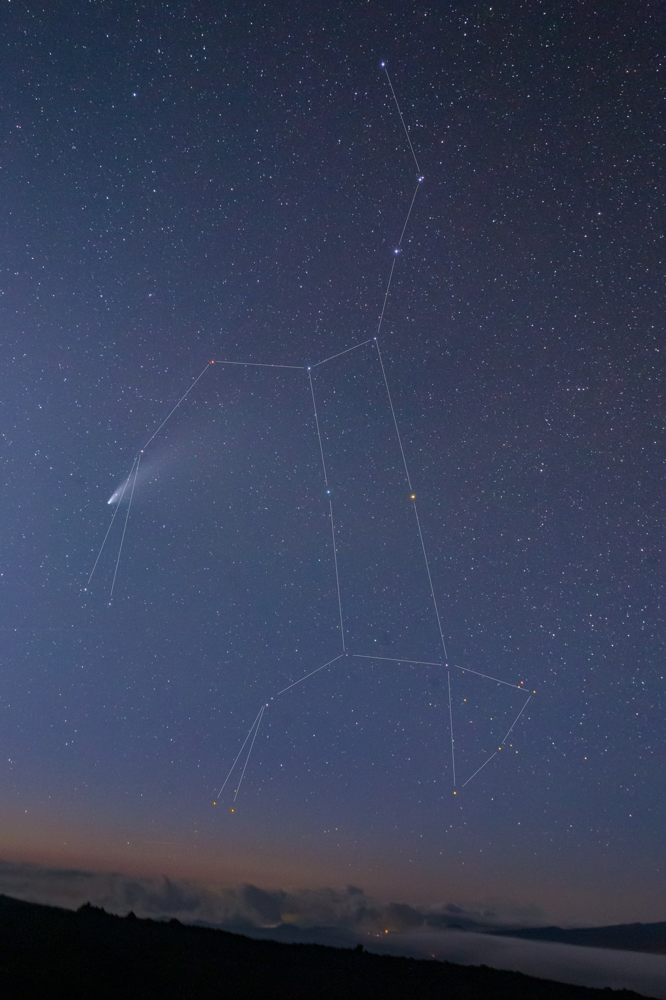
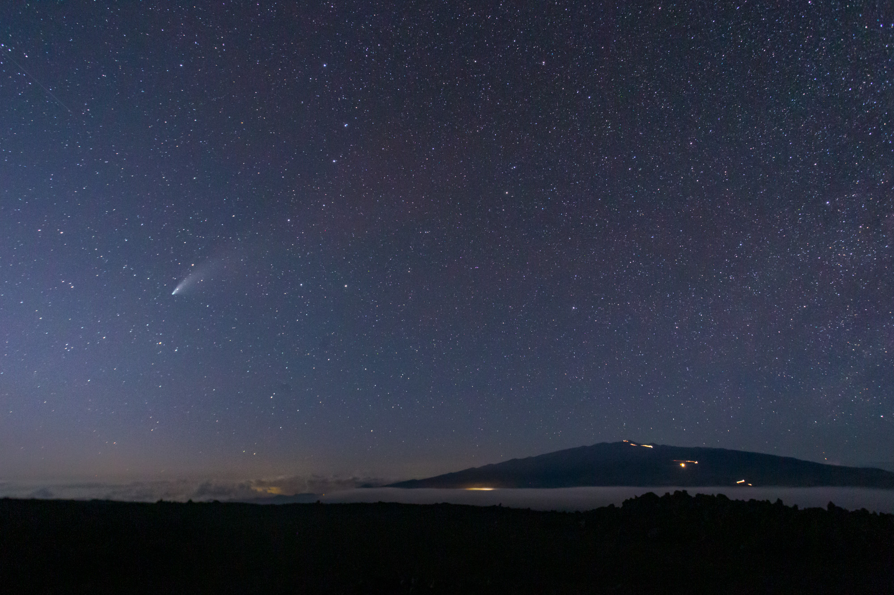

One more observing trip up to Mauna Loa to check out Comet NEOWISE before the moon becomes too bright. I had to drive up to the 9000 ft. level to get away from clouds and after setting up, they did roll over me briefly before settling down just after sunset.
I've wanted to get an image of the comet with a wide field lens showing the constellation of Ursa Major as well. The phrase "the thorn in the great bear's paw" has been in my head since first seeing the comet, but my last few trips to the coast to get a photo illustrating it were hampered by clouds. This time, however, I was successful.

The Thorn in the Great Bear's Paw
The crescent moon is just off the left edge of the image and is brightening the sky a bit, but I'm quite pleased with the image. I did a little Photoshop work to enhance the color in the brighter stars and obviously to add the constellation lines. Over the time I've been watching it the comet has moved from the forepaw of the Great Bear to the hind paw.
Here's a similar wide angle image, but of the comet and Maunakea.

Comet NEOWISE and Maunakea.
Of course, I made yet another time lapse of the comet setting next to Maunkea. This was taken with the camera on a tracking platform, so the sky appears to stay still and the horizon rotates up to cover it. A crescent moon is just out of the frame to the left and is what causes the lens flare visible at the beginning of the sequence.
An interesting aspect of this sequence is that if you look closely at the horizon where the comet is setting toward the end, you'll nee a number of streaks in the sky. I did a bit of digging and a few are meteors, but most are satellites and many of those are the Starlink satellite constellation which has been worrying astronomers due to the potential impact on astronomical observations.
This time lapse was somewhat frustrating because I had to drop several frames due to car headlights. You can see occasional stuttering in the sequence because of that.